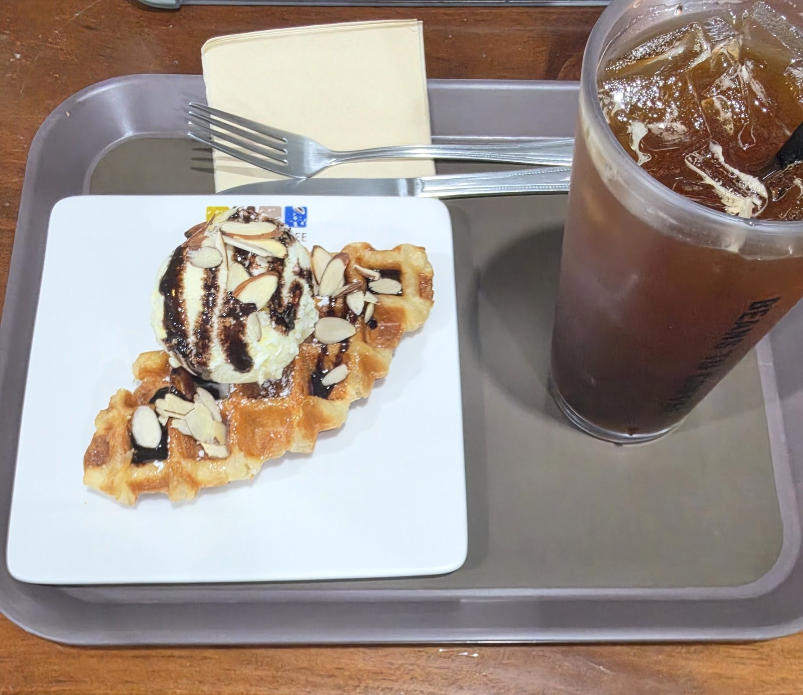
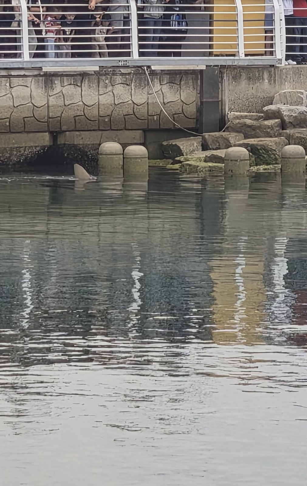
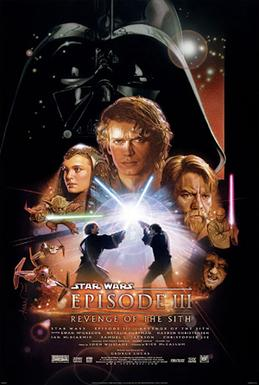

달콤한 다과 한 접시, 바다를 가르는 상어, 그리고 오래 남는 영화 한 편. 제가 좋아하는 세 가지를, 각각 직접 겪은 이야기와 함께 묶어 두었습니다.
커피 한 잔과 달콤한 디저트 하나가, 가족과의 대화를 열어 줍니다.
좋아하게 된 계기
커피와 달콤한 디저트를 앞에 두고 가족과 함께 앉아 있으면, 따로 이야깃거리를 찾지 않아도 대화가 자연스럽게 이어졌습니다. 각자 바쁘게 지내다가도 그 시간만큼은 서로의 하루를 묻고 함께 웃게 되었고, 저는 그 분위기가 참 좋았습니다. 그래서 저에게 다과는 단순한 간식이 아니라, 가족과 이야기를 나누는 시간입니다.

무섭다고만 생각했던 상어가, 요즘은 자꾸 궁금해지는 존재가 되었습니다.
'부캉이'를 알게 된 계기
9월, 부산 북항 친수공원 수로에 몸길이 3.5m쯤 되는 상어가 나타났다는 뉴스를 봤습니다. '북항에서 발견된 상어'라는 뜻으로 '부캉이'라는 이름까지 붙었다는 걸 알고, 상어에게 이름이 생겼다는 게 재밌어서 관련 소식을 계속 찾아보게 되었습니다.
부캉이가 흥미로운 점
넓은 바다에 살던 큰 상어가 도시 한가운데 수로를 천천히 맴돌고, 그 모습을 보려고 수많은 사람이 모여들었다는 점이 신기했습니다. 어떤 종인지도 아직 확실하지 않다고 해서, 상어에 대해 우리가 모르는 게 아직 많구나 싶었습니다.

영화가 끝나도, 그 안의 장면과 대사는 오래 남습니다.

가장 좋아하는 영화
스타워즈 에피소드 3
시스의 복수 (2005)
이 영화를 좋아하는 이유
스타워즈 시리즈 가운데 가장 어둡고 묵직한 분위기의 작품입니다. 화려한 우주 전투와 광선검 대결도 멋지지만, 그보다 사람이 중요한 선택 앞에서 얼마나 흔들릴 수 있는지를 진지하게 그려 낸다는 점이 마음에 남았습니다. 여러 번 봐도 볼 때마다 새롭게 생각할 거리를 주는, 저에게는 특별한 영화입니다.
So this is how liberty dies… with thunderous applause. 이렇게 자유가 죽네요… 우레와 같은 갈채와 함께.
— 「스타워즈 에피소드 3: 시스의 복수」 (2005)
왜 기억에 남는지
자유가 무너지는 순간이 꼭 요란한 싸움 속에서만 찾아오는 것은 아니라는 말이라서 오래 남았습니다. 오히려 모두가 환호하고 박수 칠 때 더 조용히 사라질 수 있다는 점이 섬뜩하게 다가왔습니다. 모두가 한목소리로 찬성하는 분위기일수록 한 번 더 멈춰 생각해 봐야 한다는 것을, 저는 이 대사에서 배웠습니다.